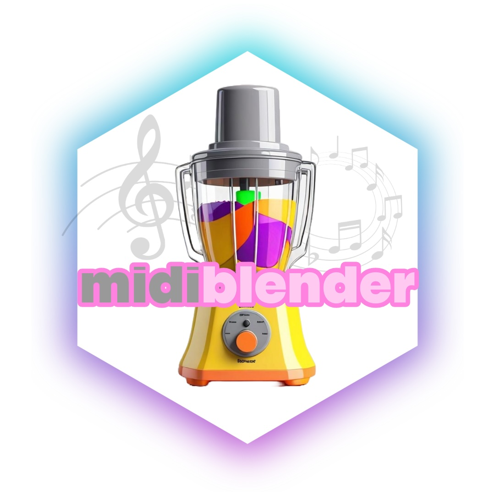

midiblender: Experiments in genRative MIDI mangling

midiblender R package logo
I’ve been busy on my music blog, which is mostly about music, but as of late has included a lot of rstats programming stuff, some of which is becoming relevant to potential new research directions for me in music cognition. So, I thought this was worth cross-posting.
I’m excited to have released a very experimental version of midiblender.
The github repo is: https://github.com/CrumpLab/midiblender
This is the beginnings of an #rstats package for experimental mangling of #MIDI files. I’m developing it with cross-purposes in mind. On the one hand, it is fun. On another hand, I might use some of this stuff in my own music. And, let’s keep going with hands, there are some neat things in here that I’ll likely use in future music cognition research. For example, the package has methods for converting MIDI into a matrix representation and back, which means MIDI becomes available for computational modeling with learning and memory models that I’m interested in testing in musical contexts. There are also clear opportunities for controlled stimulus generation, and music analysis, but I haven’t pushed much on those functions yet.
This is still very hacky, but I thought it was worth sharing at this point, even though there is much more work to do.
I wrote a getting starting vignette that could be helpful for others to try stuff out.
I’ve been posting lots of examples on my music blog that are mostly about mangling MIDI files for fun, sometimes with a little computational cognition stuff thrown in. Here’s a few:
- Systematically randomizing Super Mario brothers with R
- Midi to matrix representation and probabilistic super mario music with R
- MIDI analysis, bags of notes, and probabilistic generation
- WIP: Endless probabilistically generated mario music with midiblender
- Midi blending Canon in D probabilistically
- Analyzing and filtering note occurence by point estimation